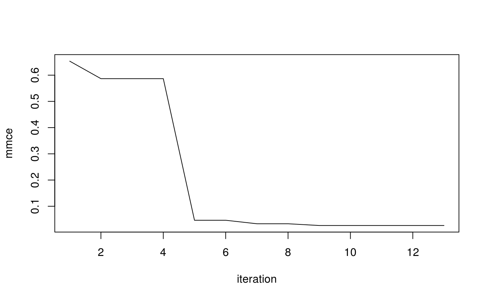

Machine learning with mlrMBO: Tuning hyperparameters with model-based optimization
Source:vignettes/supplementary/machine_learning_with_mlrmbo.Rmd
machine_learning_with_mlrmbo.RmdPurpose
This Vignette is supposed to give you an introduction on how to use mlrMBO for hyperparameter tuning in the context of machine learning using the mlr package.
mlr
For the purpose of hyperparameter tuning, we will use the mlr package. mlr provides a framework for machine learning in R that comes with a broad range of machine learning functionalities and is easily extendable. One possible approach is to use mlr to train a learner and evaluate its performance for a given hyperparameter configuration in the objective function. Alternatively, we can access mlrMBO’s model-based optimization directly using mlr’s tuning functionalities. This yields the benefit of integrating hyperparameter tuning with model-based optimization into your machine learning experiments without any overhead.
Preparations
First, we load the required packages. Next, we configure mlr to suppress the learner output to improve output readability. Additionally, we define a global variable giving the number of tuning iterations. Note that this number is set (very) low to reduce runtime.
library(mlrMBO)
library(mlr)
configureMlr(on.learner.warning = "quiet", show.learner.output = FALSE)
iters = 51 Custom objective function to evaluate performance
As an example, we tune the cost and the gamma parameter of a rbf-SVM on the Iris data. First, we define the parameter set. Note that the transformations added in the trafo argument mean, that we tune the parameters on a logarithmic scale.
par.set = makeParamSet(
makeNumericParam("cost", -15, 15, trafo = function(x) 2^x),
makeNumericParam("gamma", -15, 15, trafo = function(x) 2^x)
)Next, we define the objective function. First, we define a learner and set its hyperparameters by using makeLearner. To evaluate its performance we use the resample function which automatically takes care of fitting the model and evaluating it on a test set. In this example, resampling is done using 3-fold cross-validation, by passing the ResampleDesc object cv3, that comes predefined with mlr, as an argument to resample. The measure to be optimized can be specified (e.g by passing measures = ber, for the balanced error rate), however mlr has a default for each task type. For classification the mmce(Mean misclassification rate) is the default. Like in this example, we set minimize = TRUE and has.simple.signature = FALSE. Note that the iris.task is provided automatically when loading mlr.
svm = makeSingleObjectiveFunction(name = "svm.tuning",
fn = function(x) {
lrn = makeLearner("classif.svm", par.vals = x)
resample(lrn, iris.task, cv3, show.info = FALSE)$aggr
},
par.set = par.set,
noisy = TRUE,
has.simple.signature = FALSE,
minimize = TRUE
)Now we create a default MBOControl object and tune the rbf-SVM.
ctrl = makeMBOControl()
ctrl = setMBOControlTermination(ctrl, iters = iters)
res = mbo(svm, control = ctrl, show.info = FALSE)
print(res)
## Recommended parameters:
## cost=10.6; gamma=-12.1
## Objective: y = 0.027
##
## Optimization path
## 8 + 5 entries in total, displaying last 10 (or less):
## cost gamma y dob eol error.message exec.time cb
## 4 -14.644348 -2.100631 0.73333333 0 NA <NA> 0.133 NA
## 5 1.439886 -4.670718 0.04666667 0 NA <NA> 0.126 NA
## 6 12.278939 6.109579 0.53333333 0 NA <NA> 0.135 NA
## 7 10.554900 -12.336816 0.03333333 0 NA <NA> 0.134 NA
## 8 -5.818064 7.502343 0.70666667 0 NA <NA> 0.182 NA
## 9 10.555933 -12.055114 0.02666667 1 NA <NA> 0.131 0.02015471
## 10 5.433675 -8.946188 0.04000000 2 NA <NA> 0.132 -0.17442706
## 11 9.331960 -5.809406 0.06666667 3 NA <NA> 0.125 -0.09793003
## 12 13.587864 -9.940151 0.04666667 4 NA <NA> 0.147 -0.04694097
## 13 2.421178 -10.266161 0.19333333 5 NA <NA> 0.129 -0.02600454
## error.model train.time prop.type propose.time se mean lambda
## 4 <NA> NA initdesign NA NA NA NA
## 5 <NA> NA initdesign NA NA NA NA
## 6 <NA> NA initdesign NA NA NA NA
## 7 <NA> NA initdesign NA NA NA NA
## 8 <NA> NA initdesign NA NA NA NA
## 9 <NA> 0.056 infill_cb 0.286 0.23258301 0.25273772 1
## 10 <NA> 0.069 infill_cb 0.288 0.11501017 -0.05941690 1
## 11 <NA> 0.104 infill_cb 0.285 0.11095124 0.01302121 1
## 12 <NA> 0.075 infill_cb 0.290 0.11216645 0.06522548 1
## 13 <NA> 0.132 infill_cb 0.304 0.07340803 0.04740349 1
res$x
## $cost
## [1] 10.55593
##
## $gamma
## [1] -12.05511
res$y
## [1] 0.02666667
op = as.data.frame(res$opt.path)
plot(cummin(op$y), type = "l", ylab = "mmce", xlab = "iteration")
2 Using mlr’s tuning interface
Instead of defining an objective function where the learner’s performance is evaluated, we can make use of model-based optimization directly from mlr. We just create a TuneControl object, passing the MBOControl object to it. Then we call tuneParams to tune the hyperparameters.
ctrl = makeMBOControl()
ctrl = setMBOControlTermination(ctrl, iters = iters)
tune.ctrl = makeTuneControlMBO(mbo.control = ctrl)
res = tuneParams(makeLearner("classif.svm"), iris.task, cv3, par.set = par.set, control = tune.ctrl,
show.info = FALSE)
print(res)
## Tune result:
## Op. pars: cost=13.4; gamma=0.0829
## mmce.test.mean=0.0200000
res$x
## $cost
## [1] 13.40125
##
## $gamma
## [1] 0.08289002
res$y
## mmce.test.mean
## 0.02
op.y = getOptPathY(res$opt.path)
plot(cummin(op.y), type = "l", ylab = "mmce", xlab = "iteration")
Hierarchical mixed space optimization
In many cases, the hyperparameter space is not just numerical but mixed and often even hierarchical. This can easily be done out-of-the-box and needs no adaption to our previous example. (Recall that a suitable surrogate model is chosen automatically, as explained here.) To demonstrate this, we tune the cost and the kernel parameter of a SVM. When kernel takes the radial value, gamma needs to be specified. For a polynomial kernel, the degree needs to be specified.
par.set = makeParamSet(
makeDiscreteParam("kernel", values = c("radial", "polynomial", "linear")),
makeNumericParam("cost", -15, 15, trafo = function(x) 2^x),
makeNumericParam("gamma", -15, 15, trafo = function(x) 2^x, requires = quote(kernel == "radial")),
makeIntegerParam("degree", lower = 1, upper = 4, requires = quote(kernel == "polynomial"))
)Now we can just repeat the setup from the previous example and tune the hyperparameters.
ctrl = makeMBOControl()
ctrl = setMBOControlTermination(ctrl, iters = iters)
tune.ctrl = makeTuneControlMBO(mbo.control = ctrl)
res = tuneParams(makeLearner("classif.svm"), iris.task, cv3, par.set = par.set, control = tune.ctrl,
show.info = FALSE)Parallelization and multi-point proposals
We can easily add multi-point proposals and parallelize it using the parallelMap package. (Note that the chosen multicore back-end for parallelization does not work on windows machines. Please refer to the parallelization section for details on parallelization and multi point proposals.) In each iteration, we propose as many points as CPUs used for parallelization. As infill criterion we use Expected Improvement.
library(parallelMap)
ncpus = 2L
ctrl = makeMBOControl(propose.points = ncpus)
ctrl = setMBOControlTermination(ctrl, iters = iters)
ctrl = setMBOControlInfill(ctrl, crit = crit.ei)
ctrl = setMBOControlMultiPoint(ctrl, method = "cl", cl.lie = min)
tune.ctrl = makeTuneControlMBO(mbo.control = ctrl)
parallelStartMulticore(cpus = ncpus)
## Starting parallelization in mode=multicore with cpus=2.
res = tuneParams(makeLearner("classif.svm"), iris.task, cv3, par.set = par.set, control = tune.ctrl, show.info = FALSE)
## Mapping in parallel: mode = multicore; level = mlrMBO.feval; cpus = 2; elements = 16.
## Mapping in parallel: mode = multicore; level = mlrMBO.feval; cpus = 2; elements = 2.
## Mapping in parallel: mode = multicore; level = mlrMBO.feval; cpus = 2; elements = 2.
## Mapping in parallel: mode = multicore; level = mlrMBO.feval; cpus = 2; elements = 2.
## Mapping in parallel: mode = multicore; level = mlrMBO.feval; cpus = 2; elements = 2.
## Mapping in parallel: mode = multicore; level = mlrMBO.feval; cpus = 2; elements = 2.
parallelStop()
## Stopped parallelization. All cleaned up.Usecase: Pipeline configuration
It is also possible to tune a whole machine learning pipeline, i.e. preprocessing and model configuration. The example pipeline is: * Feature filtering based on an ANOVA test or covariance, such that between 50% and 100% of the features remain. * Select either a SVM or a naive Bayes classifier. * Tune parameters of the selected classifier.
First, we define the parameter space:
par.set = makeParamSet(
makeDiscreteParam("fw.method", values = c("anova.test", "variance")),
makeNumericParam("fw.perc", lower = 0.1, upper = 1),
makeDiscreteParam("selected.learner", values = c("classif.svm", "classif.naiveBayes")),
makeNumericParam("classif.svm.cost", -15, 15, trafo = function(x) 2^x,
require = quote(selected.learner == "classif.svm")),
makeNumericParam("classif.svm.gamma", -15, 15, trafo = function(x) 2^x,
requires = quote(classif.svm.kernel == "radial" & selected.learner == "classif.svm")),
makeIntegerParam("classif.svm.degree", lower = 1, upper = 4,
requires = quote(classif.svm.kernel == "polynomial" & selected.learner == "classif.svm")),
makeDiscreteParam("classif.svm.kernel", values = c("radial", "polynomial", "linear"),
require = quote(selected.learner == "classif.svm"))
)Next, we create the control objects and a suitable learner, combining makeFilterWrapper() with makeModelMultiplexer(). (Please refer to the advanced tuning chapter of the mlr tutorial for details.) Afterwards, we can run tuneParams() and check the results.
ctrl = makeMBOControl()
ctrl = setMBOControlTermination(ctrl, iters = iters)
lrn = makeFilterWrapper(makeModelMultiplexer(list("classif.svm", "classif.naiveBayes")), fw.method = "variance")
tune.ctrl = makeTuneControlMBO(mbo.control = ctrl)
res = tuneParams(lrn, iris.task, cv3, par.set = par.set, control = tune.ctrl, show.info = FALSE)
print(res)
## Tune result:
## Op. pars: fw.method=anova.test; fw.perc=0.905; selected.learner=classif.svm; classif.svm.cost=0.501; classif.svm.kernel=linear
## mmce.test.mean=0.0266667
res$x
## $fw.method
## [1] "anova.test"
##
## $fw.perc
## [1] 0.9050354
##
## $selected.learner
## [1] "classif.svm"
##
## $classif.svm.cost
## [1] 0.5007066
##
## $classif.svm.kernel
## [1] "linear"
res$y
## mmce.test.mean
## 0.02666667
op = as.data.frame(res$opt.path)
plot(cummin(op$mmce.test.mean), type = "l", ylab = "mmce", xlab = "iteration")